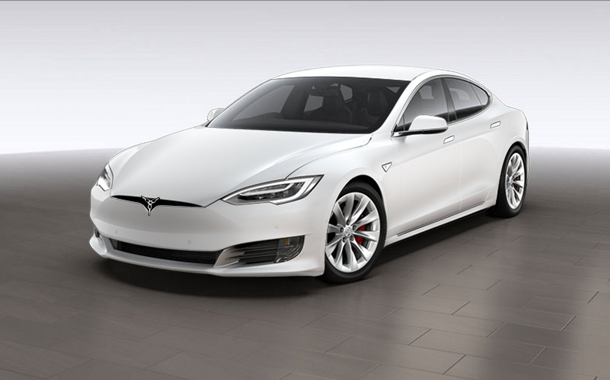
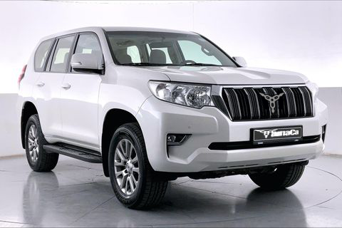
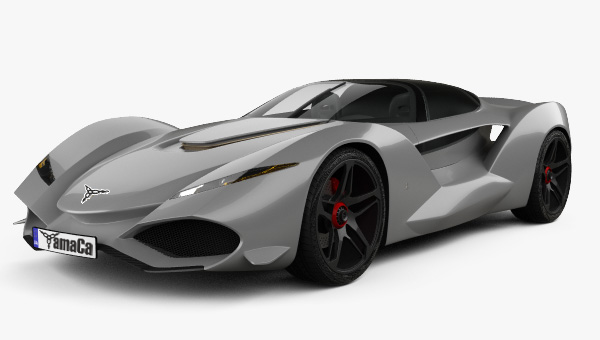

K-910
Mobil komersial K-910 adalah solusi transportasi bisnis yang andal dan efisien. Ditenagai oleh mesin tangguh, desain fungsional, dan fitur keamanan canggih, kendaraan ini dirancang untuk memenuhi kebutuhan bisnis modern. Dengan ruang kargo luas dan fokus pada kenyamanan pengemudi, K-910 siap mendukung kesuksesan operasional dan efisiensi armada Anda.
IDR 520 Juta

E-660
Sambutlah kemewahan dan kinerja luar biasa dengan mobil eksekutif E-660. Didesain untuk memenuhi standar tertinggi, kendaraan ini menggabungkan estetika yang elegan, teknologi canggih, dan kenyamanan tingkat atas. Mesin bertenaga tinggi, interior mewah, dan fitur keselamatan terkini menjadikan E-660 pilihan sempurna untuk perjalanan bisnis yang eksklusif dan penuh gaya.
IDR 1,2 Milyar

S-U73
Merasakan kegembiraan berkendara dengan mobil sport S-U73. Didukung oleh mesin bertenaga tinggi, desain aerodinamis yang memukau, dan performa luar biasa, kendaraan ini menghadirkan pengalaman mengemudi yang tak tertandingi. Interior yang dirancang dengan presisi, teknologi mutakhir, dan sistem pengendalian dinamis menjadikan S-U73 pilihan utama bagi para pecinta kecepatan dan gaya.
IDR 10 Milyar